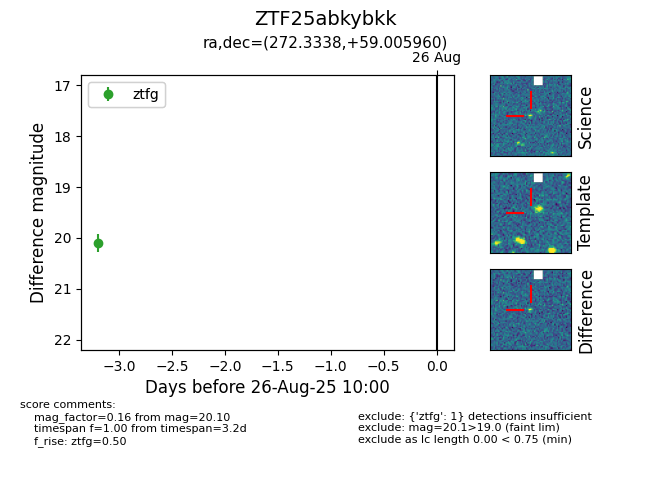

Target ZTF25abkybkk at 2025-08-26 10:00, see:
FINK: fink-portal.org/ZTF25abkybkk
Lasair: lasair-ztf.lsst.ac.uk/objects/ZTF25abkybkk
ALeRCE: alerce.online/object/ZTF25abkybkk
alt names
ZTF25abkybkk (ztf,fink)
coordinates:
equatorial (ra, dec) = (272.3338,+59.00596)
galactic (l, b) = (87.8189,+28.33324)
photometry
last ztfg=20.10
1 ztfg detections
